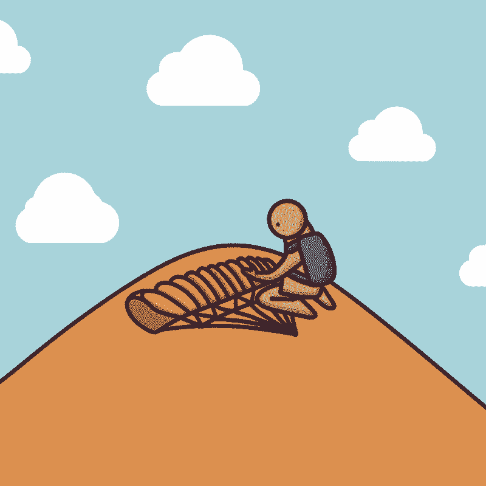

Wie man den Fluss überquert
It is a children's book about how to cross the river.
2024
Exhibitions and Performances
<The Story begins at the water's edge>, Hongcheon(KR), May 29, 2025 - June 1, 2025
“How to Cross the River” is a children’s picture book about the many different ways people try to cross a river. In the story, they come up with all kinds of creative methods—because they’re afraid. They don’t know how deep or wide the river really is. But perhaps the river is actually very shallow and narrow. Maybe it’s so small that you could simply walk across it.
